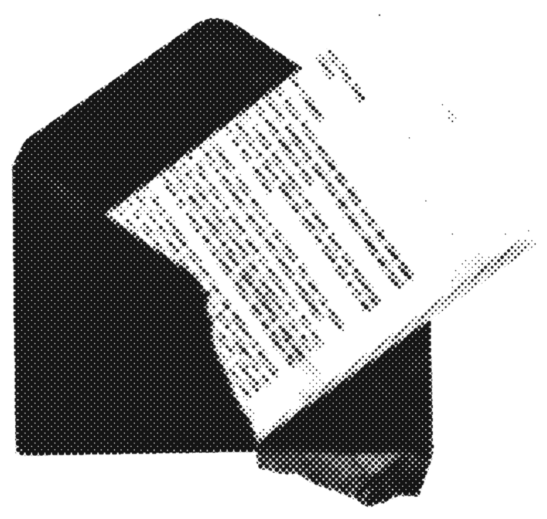
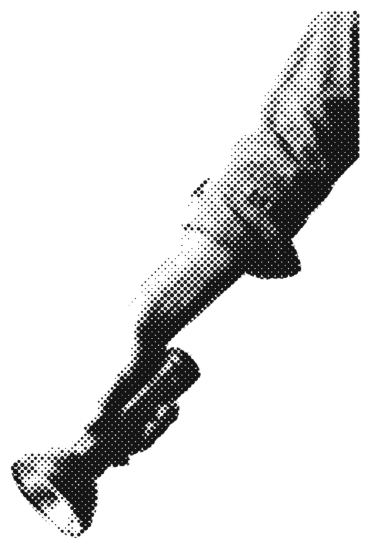

5 things your fund statement doesn't show you (for dummies)
your statement tells you what you own and what it's worth.
that's useful. it's just not the whole story.
here are 5 things it leaves out, and why they matter.
1 + 2. the days and the trades
your statement is a snapshot: your units and their value, on one date.
what the fund held in the days between? not shown.
meanwhile, the fund buys and sells with your money, sometimes daily.
you don't get a list of those trades. the yearly report gives a turnover %, not the trades.
you see the result. never the moves.

@blok.capital

3. the full cost, in plain money
your statement may show a %. an expense ratio, or a ter.
what it rarely shows is what that % actually cost you this year, in money.
and the fund's own trading costs often sit outside that headline % anyway.
quick test: what did your fund cost you last year, in money?
if you don't know, you're not alone. almost nobody does.
@blok.capital
4 + 5. the people and the timing
4. who's in between
fund house, custodian, registrar,
broker or app.
your statement usually names one or two.
5. when your money really moved
you see a date and a price.
the cash itself can take 1-3 business days
to reach your bank.
@blok.capital
the bit nobody tells you
on an on-chain portfolio, the record is the statement.
every holding, every trade, every cost and the moment it settled sit on a public ledger, in an account only you control. live, anytime.
that's what we're building at BLOK Capital.
the catch: it's newer tech and prices can swing. start small, learn first.
BLOK Capital
Everyone deserves a Garden.
Your own portfolio, out in the open. Every holding and every move on the record, live, in an account only you control.
See how it works
Educational content only. Not financial advice.
what your fund actually owns
how to invest your money (for dummies)
receipts beat reports
@blok.capital
which one surprised you? tell us in the comments. follow @blok.capital
educational content only, not financial or investment advice. on-chain assets can be volatile and you can lose money. images are ai-generated. statements, fees and payout times vary by fund, platform and country.